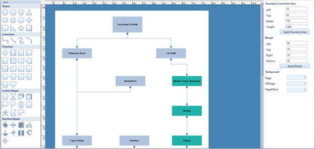

The PageMargin property is used to set the space between the DiagramPage and the DiagramView element.
Property
Table 4: Property Table
|
Property |
Description |
Type |
Data Type |
Reference links |
|
PageMargin |
Gets or sets the diagram page margin. |
Dependency Property |
Thickness |
NA |
Adding PageMargin to an Application
You can sets the diagram page margin using the PageMargin property of DiagramView. The default value is 0. The following code illustrates how to set page margin:
|
[XAML]
<syncfusion:DiagramControl Name="diagramControl"IsSymbolPaletteEnabled="True"> <syncfusion:DiagramControl.Model> <syncfusion:DiagramModel x:Name="diagramModel"/> </syncfusion:DiagramControl.Model>
<syncfusion:DiagramControl.View> <syncfusion:DiagramView Name="diagramView" PageMargin="10,20,10,20"/> </syncfusion:DiagramControl.View> </syncfusion:DiagramControl>
|
|
[C#] DiagramView diagramView = new DiagramView(); diagramView.PageMargin = new Thickness(10, 20, 10, 20); |
|
[VB] Dim diagramView As New DiagramView() diagramView.PageMargin = New Thickness(10, 20, 10, 20) |

Figure 108: Features Demo